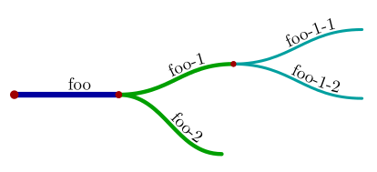
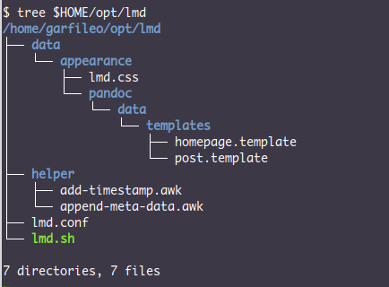
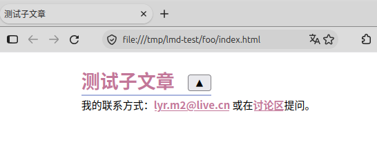
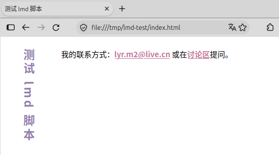
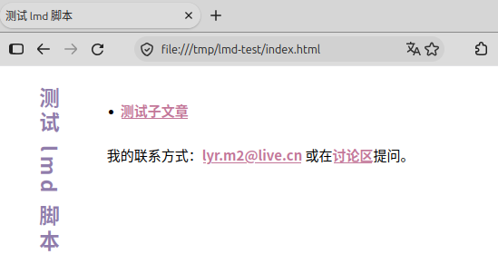

2026 年 10 月 25 日
本文档是文学程序 lmd.xi 的文档编织结果，要看懂它，前提是需要对文学编程工具 xi 有所了解。以下文档
是 xi 用户指南。若只是为了看懂本文档，并从中提取脚本代码用作试验，则上述文档只需阅读前两篇。
一个 bash 脚本，可以通过参数 $0 获得自身路径，例如
@ my-path.sh # #!/bin/bash echo $0
假设 my-path.sh 位于 /tmp 目录，执行该脚本，
$ bash /tmp/my-path.sh会输出
/tmp/my-path.sh使用 dirname 命令以及 bash
的命令替换语法，可从路径中截取目录部分，并将结果显示出来，
@ my-path.sh # + echo $(dirname $0)
如前文，再度执行 my-path.sh 脚本，可得
/tmp/my-path.sh
/tmp如果在 /tmp 目录下，执行 my-path.sh，会如何呢？
$ cd /tmp
$ bash my-path.sh结果为
my-path.sh
.dirname 得到的是相对目录。如果我们总是想得到 my-path.sh
脚本所在目录的绝对路径呢？可以先 cd 到该目录，然后用
pwd 获得绝对路径，
@ my-path.sh # + echo $(cd $(dirname $0) && pwd)
此时，若在 /tmp 目录再度执行 my-path.sh，可得
my-path.sh
.
/tmp对于本文档要创造的 lmd 脚本，需要一个全局变量存储其所在目录的绝对路径，
@ 全局变量 LMD_SELF_PATH # LMD_SELF_PATH="$(cd "$(dirname "$0")" && pwd)" => lmd 脚本核心
注意，上述代码里的三层引号，是为了防止 $0
中含有空格而导致命令失效。
一个 bash 脚本，若其具备获得自身所在的绝对路径的能力，这意味着它能够以该路径为起点，访问它所需要的一些文件。lmd 脚本需要访问哪些文件呢？
lmd 脚本所在目录，有一个 lmd.conf 文件，它是一个 bash 脚本，定义了一组变量，
@ lmd.conf # LMD_LANGUAGE="zh-CN" # 网站语言为简体中文 LMD_EMAIL='lyr.m2@live.cn' # 站长邮箱 # 讨论区 LMD_ISSUES='https://github.com/liyanrui/liyanrui.github.io/issues' # 页脚内容 LMD_FOOTER="我的联系方式：<$LMD_EMAIL> 或在[讨论区]($LMD_ISSUES)提问。"
lmd 脚本所在目录还有两个子目录 data 和 helper，前者存放 lmd 脚本运行时所需的数据，后者存放 lmd 脚本的一些辅助脚本。data 目录的结构为
data
└── appearance
├── lmd.css
└── pandoc
└── data
└── templates
├── homepage.template
└── post.template按上述结构创建目录，然后下载以下文件，
将所得文件放置于 $LMD_SELF_PATH/data
目录内相应的位置，便可创建出 lmd 脚本所需的资源。这些文件皆为 pandoc
工具所需，在它试图将 markdown 文档转化为 html 文档时。lmd
脚本的使命是驱动 pandoc，并为其提供这些文件的路径。
在 lmd 脚本看来，一篇文章，是一个目录，其中含有 index.md 文件和 figures 目录。index.md 是 markdown 文档，存放文章的内容。figures 目录存放文章所用的插图。为了方便创建这样的文章结构，定义一个专用的 bash 函数，
@ lmd_new_post 函数 # function lmd_new_post { mkdir "$2" && cd "$2" echo "---" > index.md echo "title: $1" >> index.md echo "subtitle: " >> index.md echo -e "...\n\n" >> index.md mkdir figures } => lmd-new-post-test.sh => lmd 脚本核心
lmd_new_post 的第 1 个参数是文章的名字，第 2
个参数是文章目录。例如
@ lmd-new-post-test.sh # #!/bin/bash # lmd_new_post 函数 @ lmd_new_post "Foo" foo
有一种特殊的文章，该文章结构除了拥有 figures 目录和 index.md
文件之外，还有 appearance 目录以及 lmd.conf
文件。这种文章称为根文章。函数 lmd_init
专用于创建根文章，
@ lmd_init 函数 # function lmd_init { lmd_new_post "$1" "$2" cp -r "$LMD_SELF_PATH/data/appearance" ./ cp $LMD_SELF_PATH/lmd.conf ./ } => lmd 脚本核心
无论是 lmd_init 创造的根文章，还是
lmd_new_post
创造的普通文章，二者本质上是目录，而目录可以嵌套，于是可以形成树状结构，即文章树。根文章是树的根节点，其下可以有多层普通文章节点，例如
# 创造根节点
lmd_init "Foo" foo && cd foo
# 创造两个子节点
lmd_new_post "Foo 1" foo-1
lmd_new_post "Foo 2" foo-2
# 为第一个子节点创造两个子节点
cd foo-1
lmd_new_post "Foo 1-1" foo-1-1
lmd_new_post "Foo 1-2" foo-1-2将构造的目录画成图，会更为直观，

如果当前正在 foo-1-2
节点中工作，如何获得该节点到根节点的相对路径呢？这又是一个我在何处的问题，但不能像定义
LMD_SELF_PATH
那样解决该问题，因为现在的问题是，根节点相对于我在何处。
从当前节点向根节点逐级走去，将走过的路径记录下来，便可获得当前节点到根节点的相对路径。在此行走过程中，如何获知所达节点是根节点呢？观其目录是否含有
lmd.conf 文件。若是走到文件系统的根目录 /
也未能发现文章树的根节点，则报错。这个过程可以写成递归函数，
@ path_to_root 函数 # function path_to_root { local relative_path="$1" if [ "$(pwd)" = "/" ]; then echo "Error: I can not find right path!" exit -1 elif [ -e lmd.conf ]; then echo "${relative_path%/}" else relative_path="../$relative_path" cd ../ path_to_root "$relative_path" fi } => lmd_path_to_root 函数
执行 path_to_root
函数时，若传给它空文本，则表示从当前节点出发，向文章树的根节点前进。该函数正常结束时，会输出当前节点到根节点的相对路径。在实际场景中，需将
path_to_root 置于命令替换环境，方能获取其结果，
@ lmd_path_to_root 函数 # # path_to_root 函数 @ function lmd_path_to_root { local relative_path="$(path_to_root "")" if [ "$relative_path" = "" ]; then relative_path="." fi echo "$relative_path" } => lmd 脚本核心
为什么如此执着获取当前节点到文章树根节点的相对路径呢？因为 lmd 脚本要驱动 pandoc 工作，需要基于该路径访问位于根节点的 appearance 目录中的文件。
在文章树的任一节点里，能够获得位于根节点的 appearance 目录，将其保存至一个局部变量，
local lmd_face="$(lmd_path_to_root)"/appearance根文章类似于书籍的封面页，在其目录内，使用 pandoc 命令将其转换为 html 文档，
pandoc index.md --standalone --table-of-contents \
--css="$lmd_face"/lmd.css \
--data-dir="$lmd_face"/pandoc/data \
--template=homepage.template \
--mathjax=https://cdn.bootcss.com/mathjax/3.2.2/es5/tex-mml-chtml.js \
--output foo.html所用的 pandoc 的选项，
--standalone：可让 pandoc 生成完整的 HTML
文件，即可在浏览器中呈现的网页文件；--table-of-contents：可让 pandoc 生成文章目录；--data-dir：设定模板文件目录所在路径；--mathjax：设定 MathJax 脚本 CDN 地址，以 TeX
方式渲染文档中的数学公式；--output：设定输出文件。同理，在 pandoc 的命令中，使用 post.template 作为模板文件，便可将普通文章转换为 html 文档。可是，文章树中的各个节点之间的联系，仅表现为目录层次关系，而在文章的内容里却无丝毫反映。虽然在撰写文章时，可以利用超级链接建立起文章之间的联系，但是这些联系有一部分是可以通过 lmd 脚本自动构建。例如，每当新建一篇文章时，可以自动在文章内容里添加通向其父节点文章的链接，亦即 ../index.html，通过这种链接，便可从文章树的任一节点回溯到根文章。
pandoc 所支持的 markdown 文档格式实际上并不纯粹，它允许文档头部含有 YAML 格式的元数据，在创建文章时，已经填写了两个元数据，
---
title: Foo
subtitle:
...--- 和 ... 分别是 YAML
文档的开始和结束标记。title
是文章标题。subtitle
是文章次标题，默认为空。在文档头部里，也能加入任何我们所需要的数据，例如父节点文章的位置，
category: ../index.htmllmd 脚本可以利用该信息，在文章里创建通往父节点文章的链接。
此外，无论是根文章还是普通文章，其 index.md 的头部还需要添加
lang 和 footer 信息，例如
lang: zh-CN
footer: 我的联系方式：<lyr.m2@live.cn>pandoc 会将 lang 和 footer
的值传递给文章模板 home.template 和 post.template，从而生成的 html
文档里含有这些信息。
这些元数据可以手工写入每篇文章，但我没有这种耐心，想必你也不是一直都有。这个工作应该交由 lmd 脚本完成。一个简单的策略是，由 lmd 脚本向将每篇文章的 index.md 文件的复本填充元数据，然后用 pandoc 将该复本转换为 html 文件，最后将复本删除。如此偷梁换柱，index.md 文件能保持其头部原本的清爽状态，而你就像从未关心过这些元数据。
根文章只需要增加 lang 和
footer，因为它没有父节点文章。这两个元数据，在根文章的
lmd.conf 文件里定义，载入该文件便可获得，
@ 载入 lmd.conf # source "$(lmd_path_to_root)/lmd.conf" => lmd_add_meta_data 函数
向根文章复本写入元数据，此任务使用 awk 语言所写的脚本更为容易，
@ 向根文章写入元数据 # awk -v lang="$LMD_LANGUAGE" \ -v footer="$LMD_FOOTER" \ -f "$LMD_SELF_PATH/helper/add-meta-data.awk" \ index.md > ._tmp_index.md => lmd_add_meta_data 函数
LMD_LANGUAGE 和 LMD_FOOTER 皆为 lmd.conf
文件中定义的变量。add-meta-data.awk 是 awk 脚本，位于 lmd 脚本所在目录的
helper 目录，负责向 ._tmp_index.md 文件写入元数据，其内容为
@ add-meta-data.awk # BEGIN { first = 1 } /^---/, /\.\.\./ { if (first && $0 == "...") { # 在 YAML 结束符之前插入元数据 if (category) print "category:", category if (lang) print "lang:", lang if (footer) print "footer:", footer first = 0; } } { print $0 }
在 add-meta-data.awk 脚本里，元数据以 awk
命令选项参数的形式传入，元数据的左值便自动成为脚本里的变量，元数据的右值则是变量的值。处理根文章时，awk
命令未提供 category 选项，意味着该脚本中，变量
category 无值，作为条件表达式时，为假，故而不会输出
category 的值。
向普通文章写入元数据时，可以给出 category 的值，
@ 向普通文章写入元数据 # awk -v lang="$LMD_LANGUAGE" \ -v footer="$LMD_FOOTER" \ -v category="../index.html" \ -f "$LMD_SELF_PATH/helper/add-meta-data.awk" \ index.md > ._tmp_index.md => lmd_add_meta_data 函数
lmd_add_meta_data 函数可根据当前目录是否存在 lmd.conf
文件，对文章酌情处理，
@ lmd_add_meta_data 函数 # function lmd_add_meta_data { # 载入 lmd.conf @ if [ -e lmd.conf ]; then # 向根文章写入元数据 @ else # 向普通文章写入元数据 @ fi } => lmd 脚本核心
若文章需要写上时间，则时间也应当作为元数据。并非所有文章都需要写上时间，例如根文章并不需要，故而为文章增加时间元数据，需要定义为一个单独的函数，按需调用。
add-timestamp.awk 脚本可以在文章头部增加 data 数据，
@ add-timestamp.awk # BEGIN { first = 1 } /^---/, /\.\.\./ { if (first && $0 == "...") { # 若文章已有时间戳，将其清除 gsub(/\n[ \t]*date:[^\n]*/, "", $0) # 设置时间戳 if (date) print "date: " date } } { print }
date 变量的值，由 awk
命令参数传入。lmd_add_timestamp 函数用于驱动
add-timestamp.awk 脚本，
@ lmd_add_timestamp 函数 # function lmd_add_timestamp { local date="$(date +'%Y 年 %m 月 %d 日')" awk -v date="$date" \ -f "$LMD_SELF_PATH/helper/add-timestamp.awk" \ index.md > ._tmp_index.md } => lmd 脚本核心
build_post 函数驱动 pandoc，将当前文章的 index.md
含有元数据的复本转化为 index.html 文档，
@ build_post 函数 # MATHJAX=https://cdn.bootcdn.net/ajax/libs/mathjax/4.1.3/input/tex.js function build_post { lmd_add_meta_data local lmd_face="$(lmd_path_to_root)"/appearance if [ "$lmd_face" = "./appearance" ] then pandoc ._tmp_index.md --standalone \ --css "$lmd_face/lmd.css" \ --data-dir="$lmd_face/pandoc/data" \ --template=homepage.template \ --mathjax=$MATHJAX \ -o index.html else pandoc ._tmp_index.md --standalone --table-of-contents \ --css "$lmd_face/lmd.css" \ --data-dir="$lmd_face/pandoc/data" \ --template=post.template \ --mathjax=$MATHJAX \ -o index.html fi rm -f ._tmp_index.md } => lmd_build 函数
但是，build_post
并不安全，在执行它之前，需要判断当前目录是否存在 index.md 文件，
@ lmd_build 函数 # # build_post 函数 @ function lmd_build { if [ -e index.md ] then build_post fi } => lmd 脚本核心
汇集上文实现的一些代码片段，形成 lmd 脚本核心，
@ lmd 脚本核心 # # 全局变量 LMD_SELF_PATH @ # lmd_new_post 函数 @ # lmd_init 函数 @ # lmd_path_to_root 函数 @ # lmd_add_meta_data 函数 @ # lmd_add_timestamp 函数 @ # lmd_build 函数 @ => lmd.sh
然后分别构造一个简单的命令行界面，
@ lmd 脚本命令行界面 # case $1 in init) lmd_init "${@:2}" ;; new) lmd_new_post "${@:2}" ;; timestamp) lmd_add_timestamp ;; build) lmd_build ;; esac => lmd.sh
$@或${@}表示所有的命令行参数，${@:2}是 bash 的参数切片语法，表示从$2开始直至最后一个参数所形成的参数集合切片。从$2到$5的切片，可表示为${@:2:3}，即从$2开始，长度为 3 的切片。
lmd 脚本由其核心和命令行界面构成，
@ lmd.sh # #!/bin/bash set -euo pipefail # 提升脚本健壮性 # lmd 脚本核心 @ # lmd 脚本命令行界面 @
在 Linux 环境里，可以用 wget 命令获得 lmd.xi 文件，然后用 xi 命令提取 lmd 脚本和
add-meta-data.awk 脚本，
$ wget https://liyanrui.github.io/2026/lmd/lmd.xi
$ xi -t -e "lmd.sh, lmd.conf, add-meta-data.awk" lmd.xi
$ chmod +x lmd.sh在使用 xi 提取文学程序片段时可以一次提取多个片段，若片段名是文件名，可省略
-o选项。xi 默认会以片段名作为输出文件名。
假设将所得 lmd.sh 和 lmd.conf 放在 $HOME/opt/lmd 目录内，将 add-meta-data.awk 放在该目录的 helper 子目录内，
$ mkdir -p $HOME/opt/lmd/{data/appearance,helper}
$ mv lmd.sh $HOME/opt/lmd
$ mv lmd.conf $HOME/opt/lmd
$ mv add-meta-data.awk $HOME/opt/lmd/helper 在 data/appearance 目录内，放置 lmd.css 文件和 pandoc 模板
$ cd $HOME/opt/lmd/data/appearance
$ wget https://liyanrui.github.io/appearance/lmd.css
$ mkdir -p pandoc/data/templates
$ cd pandoc/data/templates
$ wget https://liyanrui.github.io/appearance/pandoc/data/templates/homepage.template
$ wget https://liyanrui.github.io/appearance/pandoc/data/templates/post.template至此，一个完善的 lmd.sh 脚本的运行环境便构造了出来，其结构形如

在 /tmp 目录里执行 $HOME/opt/lmd/lmd.sh 脚本，
$ cd /tmp
$ export PATH=$HOME/opt/lmd/:$PATH
# 创建根文章，进入其目录
$ lmd.sh init "测试 lmd 脚本" lmd-test && cd lmd-test
$ lmd.sh build
# 创建子文章，进入其目录
$ lmd.sh new "测试子文章" foo && cd foo
$ lmd.sh timestamp # 为子文章增加时间戳
$ lmd.sh build使用网页浏览器打开 /tmp/lmd-test/foo/index.html 文件，结果如下图所示，

点击标题「测试子文章」右侧的按钮，可以跳转至根文章，

子文章页面里的按钮，本质上是指向上级文章节点的超级链接。该链接之所以能够自动构造出来，是因为文章头部含有
category 元数据，其值为 ../index.html。在
post.template 文件里，使用该元数据的模板代码为
<h1 class="title">$title$
<span class="back-to-top-span">$if(category)$
<a href="$category$">
<button id="back-to-top" aria-label="返回目录">▲</button>
</a>$endif$</span></h1>上述代码中的 $category$，即 pandoc 从文章头部提取的
category 元数据。
现在，只能从一篇文章开始逐级向上切换至根文章，却无法从根文章开始逐级向下切换至某篇文章。需要设法在上级文章里放置下级文章的链接，该过程称为归档，上级文章相当于下级文章的目录，亦即对于任何一篇文章，它需要假设上级文章含有一个文档列表，然后需要某种方式将自身添加到该列表的尾部或首部。
最简单的办法是手工在文章里添加下级文章的链接。例如，编辑上一节的示例中的根文章，使其内容为
---
title: 测试 lmd 脚本
subtitle:
...
* [测试子文章](foo/index.html)在根文章目录，即 /tmp/lmd-test 目录，执行
$ lmd.sh build重新生成的根文章便含有下级文章的链接了。

这个过程能否自动化呢？可以，但没有太大必要。手工归档所耗费的时间，与写一篇文章所用的时间相比，几乎可以忽略不计。此外，手工完成文章归档，也具备最大的灵活性，通常你需要像一名期刊编辑那样完成这类工作。